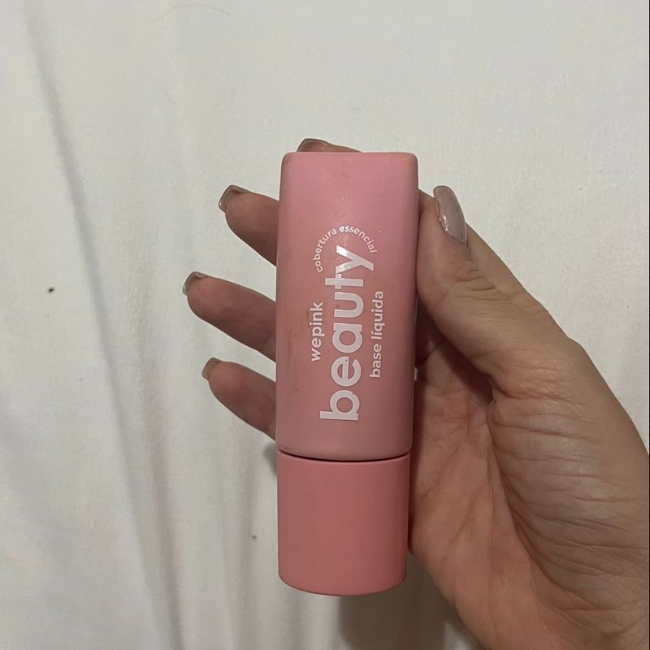
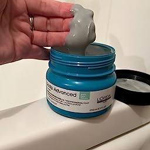

Comprei a base da we Pink, meu rosto em poucos dias encheu de espinha. Parei o uso, até porque estava inflamado e não pode passar em cima.
Mas meu rosto estava muito feio, e com
Isso não quiz nem sair no FDS pois até com base estava péssimo..

Nossaa, aconteceu o mesmo comigo...
Na minha pele deu certo, pode ser alguma substancia ou reação alergica
Tenho o cabelo bastante oleoso e senti que a máscara/shampoo limpa super bem o couro cabeludo. O produto dá aquela refrescada, sabe? Mas tudo isso, sem deixar o cabelo ressecado e também sem dar efeito rebote.

ele é maravilho!!
A textura é mais leve, fininha, então eles não são aqueles balms que duram horas intactos nos lábios. Mas como hidratante labial é um tipo de produto que costumo retocar com frequência, não é algo que me incomode.